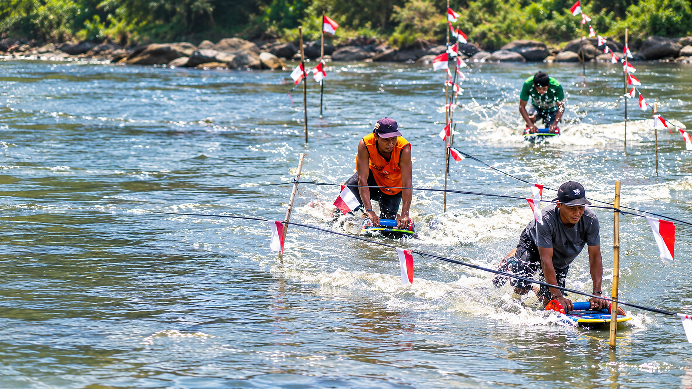

Kolaborasi Warga dan Petugas dalam Aksi Bersih Lingkungan
10 Okt 2026
10 Okt 2026

08 Okt 2026

Kegiatan bersih lingkungan menjadi salah satu bentuk kepedulian masyarakat terhadap kebersihan dan kelestarian kawasan sekitar. Dalam gambar terlihat sejumlah warga dan petugas bekerja bersama mengumpulkan sampah di area terbuka.
10 Okt 2026 • Oleh Isabella dan Lucas
05:00 WIB
Kegiatan bersih lingkungan menjadi salah satu bentuk kepedulian masyarakat terhadap kebersihan dan kelestarian kawasan sekitar.

05:30 WIB
Media memiliki peran penting dalam menyampaikan informasi mengenai berbagai peristiwa kepada masyarakat.

06:00 WIB
Koordinasi antarpemangku kepentingan merupakan salah satu aspek penting dalam mendukung pelaksanaan program pembangunan.

06:30 WIB
Pembangunan yang berkelanjutan membutuhkan kerja sama berbagai pihak, termasuk pemerintah, masyarakat, dan sektor terkait.
Temukan keindahan alam, cita rasa kuliner, kekayaan budaya, dan berbagai acara menarik di Pasuruan.

Nikmati kesegaran alam dan suasana asri di salah satu destinasi wisata unggulan Pasuruan.
Lihat Destinasi
Rasakan cita rasa khas Pasuruan yang melegenda, pedasnya bikin nagih!
Lihat Kuliner
Seni tradisional yang menjadi warisan budaya dan kebanggaan masyarakat Pasuruan.
Lihat BudayaRagam acara menarik mulai dari festival budaya, musik, hingga pameran UMKM.
Lihat Acara